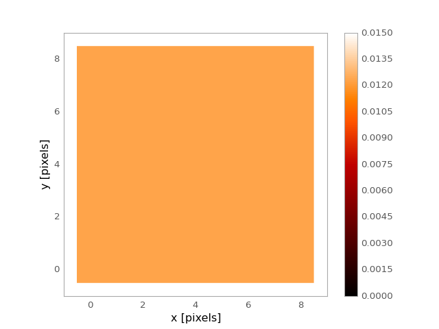

Box2DKernel¶
-
class
astropy.convolution.Box2DKernel(width, **kwargs) [edit on github][source]¶ Bases:
astropy.convolution.Kernel2D2D Box filter kernel.
The Box filter or running mean is a smoothing filter. It is not isotropic and can produce artifact, when applied repeatedly to the same data.
By default the Box kernel uses the
linear_interpdiscretization mode, which allows non-shifting, even-sized kernels. This is achieved by weighting the edge pixels with 1/2.Parameters: width : number
Width of the filter kernel.
mode : str, optional
- One of the following discretization modes:
- ‘center’
Discretize model by taking the value at the center of the bin.
- ‘linear_interp’ (default)
Discretize model by performing a bilinear interpolation between the values at the corners of the bin.
- ‘oversample’
Discretize model by taking the average on an oversampled grid.
- ‘integrate’
Discretize model by integrating the model over the bin.
factor : number, optional
Factor of oversampling. Default factor = 10.
See also
Gaussian2DKernel,Tophat2DKernel,MexicanHat2DKernel,Ring2DKernel,TrapezoidDisk2DKernel,AiryDisk2DKernel,Moffat2DKernelExamples
Kernel response:
import matplotlib.pyplot as plt from astropy.convolution import Box2DKernel box_2D_kernel = Box2DKernel(9) plt.imshow(box_2D_kernel, interpolation='none', origin='lower', vmin=0.0, vmax=0.015) plt.xlim(-1, 9) plt.ylim(-1, 9) plt.xlabel('x [pixels]') plt.ylabel('y [pixels]') plt.colorbar() plt.show()
(Source code, png, hires.png, pdf)

{kind=link}
{kind=link}